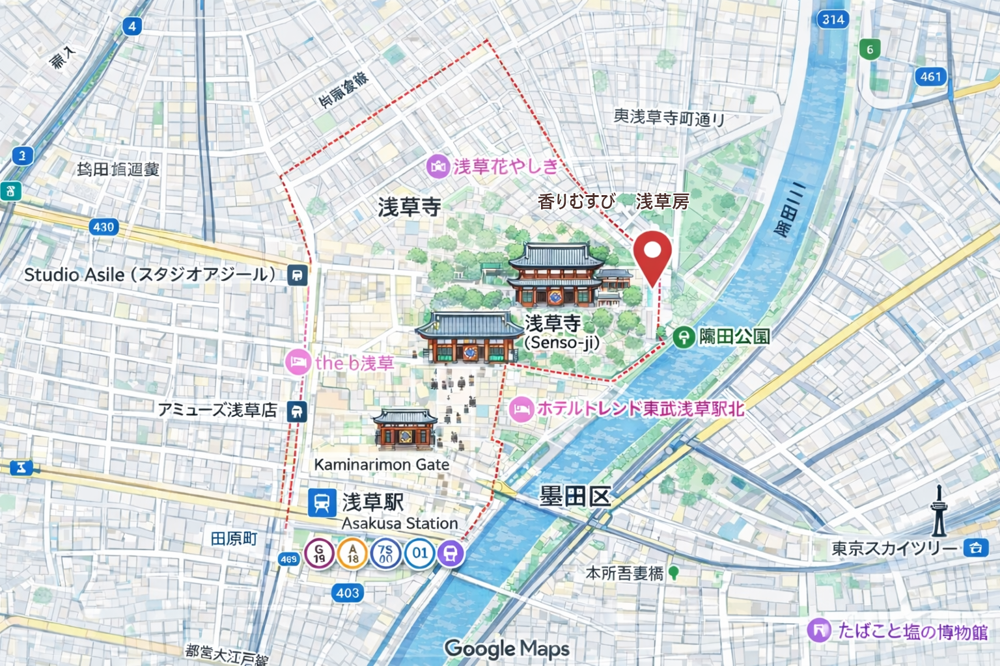
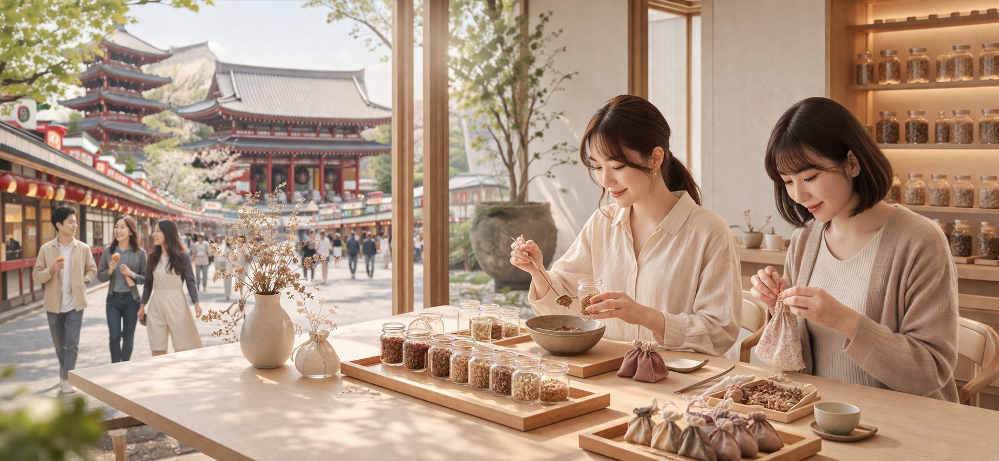

An easy stop even while exploring Asakusa.
Kaomusubi Asakusabou is located where it fits naturally into an Asakusa sightseeing route.
You can check the address, opening hours, and how to reach us from the nearest station.

How to get here from the nearest station
You can reach us on foot from Asakusa Station.
We have outlined the route step by step so it is easy to follow even during sightseeing.
Exit Asakusa Station
Take your preferred line, such as the Ginza Line, Toei Asakusa Line, or Tobu Line, and head up to street level.
Walk toward Senso-ji
Enjoy the lively atmosphere around Kaminarimon as you make your way toward the Senso-ji area.
Arrive at the shop
You will find Kaomusubi Asakusabou along a calmer street. Arriving a little before your reserved time is recommended.

Easy to enjoy alongside nearby sightseeing
- Convenient to stop by from Senso-ji and Nakamise Street
- Easy to join between food stops and walking around town
- You can continue exploring Asakusa after the workshop
If you are unsure about the route or timing, please feel free to contact us.
We can also help you plan it around your itinerary.
Once you know the location, the fragrance experience is next.
After checking access and your route, feel free to ask about availability or which plan may suit you best.